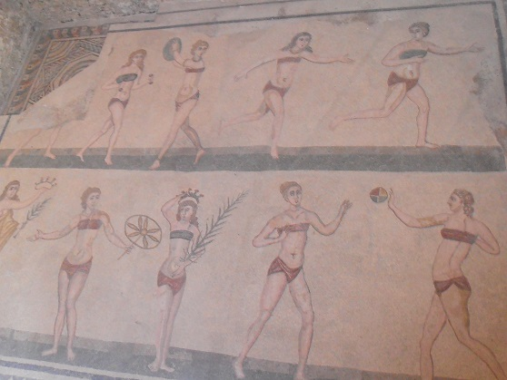
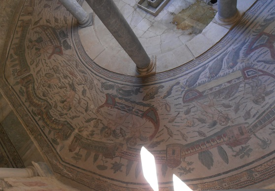
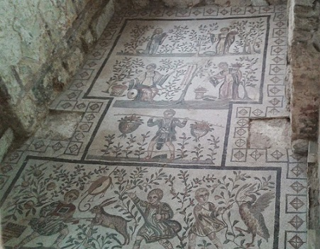
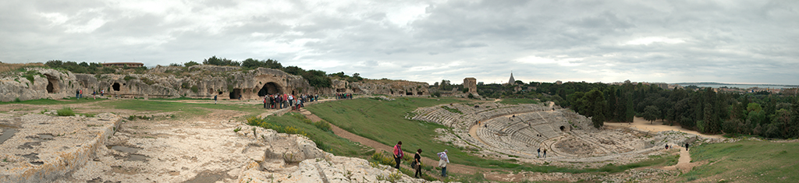
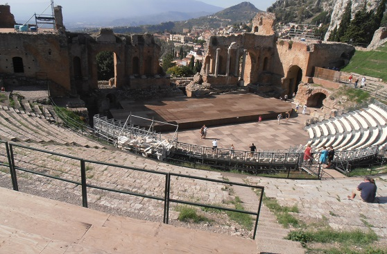
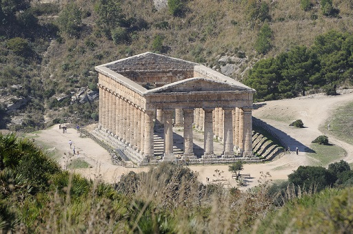
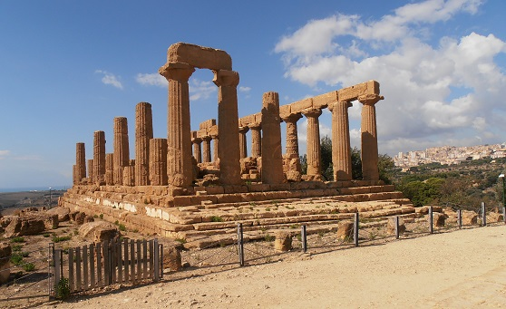
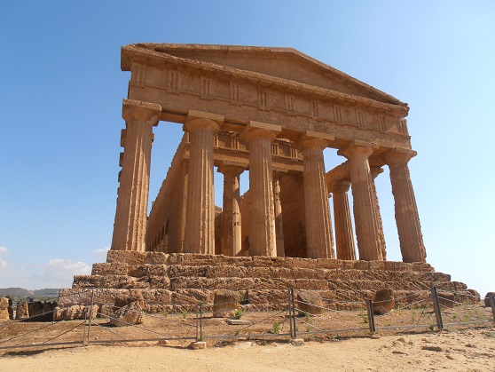
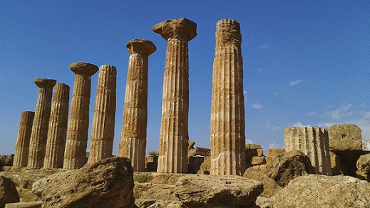
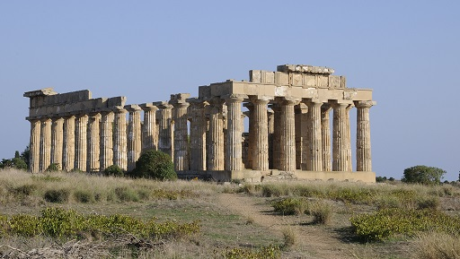

|
S I C I L I A
El nombre de Sicilia, deriva de los
antiguos pueblos que la habitaron, los sículos y sicanos. Habitada desde
el tercer milenio a.e.c. En el siglo VIII a.e.c., Sicilia fue conquistada
por los griegos que fundaron varias ciudades de importancia. Durante la
Segunda Guerra Púnica, Sicilia se alió con Cartago, los romanos la
conquistaron en el 212 a.e.c. Sicilia era llamada el granero de
Roma, pero era incapaz de alimentarse a sí misma. En el siglo V los
vándalos la saquearon y sometieron, aunque luego fueron expulsados por los
ostrogodos. A mediados del siglo VI, el general Belisario, la incorporó al
Imperio Bizantino.
La villa romana del Casale
La villa se halla en el centro de
Sicilia, a 5km de Piazza Armerina, en la provincia de Enna. La villa es
mundialmente conocida por poseer el complejo de mosaicos mejor
conservado de época romana. Fue la lujosa residencia de Maximiano, que
gobernó el imperio del 286 al 305. Todo parece indicar que la villa de
Casale fue un pabellón de caza. Con una extensión de 3500, en total más
de 50 salas. Los motivos van desde elementos de la vida cotidiana a
juegos, actividades deportivas, danza, cortejo, masajes, juegos de
niños, caza y mitología. Los mosaicos fueron construidos por artistas
africanos que fundieron los estilos de mosaicos policromados con fondos
monocromos. Uno de los mayores mosaicos de Piazza Armerina es de la
escena de caza, que escenifica la captura de animales terrestres y
acuáticos como tigres, leones, avestruces, antílopes, panteras,
elefantes o jabalíes.
Además son muy característicos los mosaicos denominados escena erótica
que representan a dos jóvenes besándose, y la sala de las diez
muchachas, que representan a mujeres realizando actividades deportivas
vestidas con bikinis.
|
 |
 |
|
 |
 |
Siracusa
Siracusa, dónde nació y vivió Arquímedes.
El Parque arqueológico Neapolis; del que destaca el teatro griego,
construido en el siglo III a.e.c., con una capacidad de 16.000
espectadores. Es el teatro más grande de Sicilia. En la punta nordeste del
parque hay una necrópolis romana dónde aún quedan dos tumbas en pie y se
dice que en una de ellas están los restos de Arquímedes. El anfiteatro de
Siracusa tiene unas medidas de 140m x 119m . Podemos observar dos arcadas
la norte y la sur que era la que servía para dar paso a los gladiadores y
a las fieras, así mismo se sabe que en la entrada principal más meridional
había un acceso de entrada a los carros para los espectáculos de
cuadrigas. El deterioro de las gradas es debido al uso de las piedras como
cantera. Foto:
Ernesto
Sardón

|
Taormina
Taormina está a 107 km al norte de Siracusa. Taormina, la antigua colonia
Tauromerion, fue fundada por colonos huidos de la saqueada Naxos en el 403
a.e.c, fue, arrasada por Siracusa y enaltecida por los romanos. Destaca el
teatro griego. Fue construido por los griegos en el s. III a.e.c, la
estructura que se puede ver actualmente es principalmente romana, ya que
fue reformada a fondo por los romanos en el siglo primero de nuestra era.
Desde el teatro se divisan unas vistas absolutamente fantásticas del
volcán Etna. Es el segundo teatro más grande de la isla, después del de
Siracusa.

|
Catania
|
Catania, la antigua Katane, fue
fundada en lo alto de una colina por los griegos en el año 729 a.e.c.
En el año 476 a.e.c. Ierone de Siracusa ocupa la ciudad y la
repuebla con ciudadanos de Siracusa. Los cataneses volvieron a tomar
el poder de su ciudad en el año 461 a.e.c.
En la primera guerra
púnica fue sometida Roma el 263 a.e.c. al ser ocupada por Valerio
Mesala. Fue aliada de Roma nombre bajo dominio romano fue Catana o
Catina. En el 121 a.e.c. la erupción del Etna la afectó seriamente y
quedó libre de tasas durante dos años. Fue saqueada por Sexto
Pompeyo y recibió después una colonia romana bajo César Augusto. El
anfiteatro data de la segunda mitad del siglo II a.e.c La
circunferencia externa es de 309 metros y 192 metros de
circunferencia de la arena; se ha calculado que podía albergar 15000
espectadores sentados, y casi el doble en pié. El principal material
empleado es la piedra lávica. Tras la ocupación de los vándalos la
ciudad es saqueada y el anfiteatro abandonado y expoliado.
|
Segesta
En el área arqueológica de Segesta
destaca el teatro del siglo III a.e.c. y el templo dórico del siglo V
a.e.c.
Foto:
Ernesto Sardón

Agrigento
|
Agrigento está unos 126 km al sur
de Palermo. Destaca el Valle de los Templos a sólo 1km del centro.
La carretera SS118 que llega desde el centro de Agrigento divide la
zona arqueológica en dos: zona este y zona oeste. Agrigento posee el
conjunto de templos griegos mejor conservado del mundo. El Templo de
Hércules, el Templo de la Concordia o el Templo de Juno. En la zona
oeste el más destacable es el enorme Templo de Júpiter. El valle de
los templos de Agrigento, antigua Akragas descrita por Píndaro como
“la más hermosa de las ciudades mortales”. Fundada en el 580 a.e.c.,
conservó su esplendor hasta el 406 a.e.c. cuando los cartagineses
sitiaron y saquearon la ciudad. De nuevo en época romana Agrigento
gozó de gran importancia. A medio camino entre la ciudad y la zona
de los templos encontramos el Museo Arqueológico, con una
interesante colección de objetos encontrados en las excavaciones de
la zona arqueológica. Junto al museo está la Chiesa di San Nicola y
al otro lado de la carretera tenemos el barrio greco-romano, un
pequeño entramado de calles bien conservado que formaba parte de la
antigua estructura urbana de la ciudad griega de Akragas (los
romanos la rebautizaron con el nombre de Agrigentum). |
|
Los templos de Agrigento son todos
de estilo dórico. El Templo de Juno Lacinia, domina la cima del
Valle. Data del 450 a.e.c. y conserva la fila de columnas
septentrional y parcialmente la de los otros tres lados. En época
romana fue restaurado tras un incendio que dio color a las piedras
de la cella.

Seguiremos el recorrido hasta el Templo de la
Concordia, que es el templo mejor conservado, mide 42 metros de
largo por 19,5 de ancho y que fue levantado entre el 450 y el 400 a.e.c. Es muy probable que estuviese dedicado a Castor y Pólux.
Consta de 34 columnas, antiguamente recubiertas de estuco blanco y
conserva las arcadas abiertas entre las columnas. En el siglo VI fue
utilizado como basílica cristiana y posteriormente en 1748 fue
restaurado. Más adelante a la izquierda se halla la Villa Aurea, que
posee restos de una necrópolis bizantina.

El Templo de Hércules es el más antiguo de los templos conservados
en Agrigento, data del 510 a.e.c. Restaurado en 1924, se levantan
sobre su base 8 de las 38 columnas originales. Con una planta de
112,5 m de largo por 56 de ancho, pero nunca fue finalizado.

En el
fondo de este túmulo se halla el Templo de Vulcano, del que se
conservan dos columnas y el basamento. También se conserva la Tumba
de Terón, monumento funerario del siglo I a.e.c. |
|
Selinunte
Selinunte, en la provincia de Trapani,
en la costa sudoste de Sicilia, es uno de los enclaves arqueológicos más
destacados del Mediterraneo, y sobre todo el yacimiento griego más
extenso. Selinunte es el nombre que dieron los romanos a la antigua
Selinus griega. El complejo arqueológico actual se divide en cuatro
zonas: Los Templos Orientales, La Acrópolis, La Ciudad Antigua, y el
santuario de Malophoros. Merece la pena visitar a las canteras de Cusa.
Esparcidas en el campo, totalmente abandonadas. Afortunadamente, la
huida precipitada por el ataque de los cartagineses en el 409 a.e.c.,
nos proporciona una idea de como extraían la piedra, e incluso de como
la transportaban. Siguiendo a pié el camino, en dirección mar, la imagen
de la acrópolis sobre el mar es una de las vistas más imborrables de
Sicilia. En la zona púnica hallamos restos de un área de sacrificios en
cuyas losas se observa el signo de la Diosa Tanit.
Foto:
Ernesto Sardón

Capo
Tindari
Entre los principales vestigios
de la antigua Tyndaris destacan el teatro griego del siglo IV a.e.c.,
la basílica, una villa romana y las ruinas de un barrio romano, una
ínsula.
Aidone
El área arqueológica de
Morgantina de la que destaca el ágora, el teatro griego, con
capacidad para unos 5.000 espectadores, y el santuario.
Moiza
En la isla de San Pantaleón,
también conocida como Mozia o Motya, destacan los restos de época
púnica, la muralla, el templo y los restos del puerto.
|
|